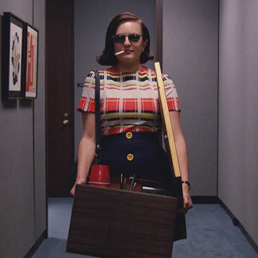

Peggy Olson

Summary
A highly accomplished Advertising Professional renowned for my unwavering
commitment to creative excellence and strategic ingenuity. With a
remarkable history of crafting memorable campaigns and innovative brand
strategies, I aspire to continue my career trajectory in a leadership
capacity, contributing to the evolution of the advertising industry. My
passion for understanding consumer behavior, identifying emerging market
trends, and fostering a culture of innovation positions me as a valuable
asset. I am now seeking an influential role that affords me the
opportunity to channel my wealth of experience and insight into creating
transformative advertising campaigns, pushing creative boundaries, and
driving unparalleled success. My dedication to mentorship and nurturing
emerging talent ensures I remain at the forefront of the industry's
evolution, continuously making an indelible impact.
Education
Bachelor of Arts in English, Brooklyn College
Professional Experience
Creative Director, Sterling Cooper Draper Pryce, NY |1963 - 1970
-
Led creative teams in developing and executing groundbreaking
advertising campaigns.
-
Demonstrated a keen understanding of consumer behavior and market
trends to craft compelling brand strategies.
-
Nurtured a culture of innovation and mentorship, fostering the growth
of young talent.
Copywriter, Sterling Cooper Draper Pryce, NY |1960 - 1963
-
Created persuasive, memorable copy for print and broadcast advertising
campaigns.
-
Collaborated with art directors and account executives to deliver
integrated marketing solutions.
- Contributed to the agency's creative and strategic direction.
Skills
- Media Planning: ⭐️⭐️⭐️⭐️⭐️
- Creative Strategy: ⭐️⭐️⭐️⭐️⭐️
- Brand Development: ⭐️⭐️⭐️⭐️⭐️
- Market Research: ⭐️⭐️⭐️⭐️⭐️
- Copywriting: ⭐️⭐️⭐️⭐️⭐️
- Team Leadership: ⭐️⭐️⭐️⭐️⭐️
- Client Relations: ⭐️⭐️⭐️⭐️⭐️
Awards and Achievements
-
Received the prestigiousClios Award for Best Print
Campaign(1965)
-
Recognized as one of the"Top 10 Creatives to Watch" by
Ad Age (1964)
-
Led the development of the highly successful
"Belle Jolie"
lipstick campaign(1962)
Hobbies
- Collecting Vintage Vinyl Records
- Visiting Art Galleries and Museums
- Engaging in Creative Writing
- Volunteering with Local Charities
More Information